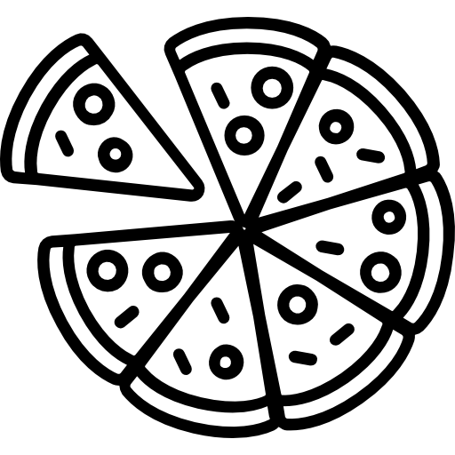

We're bringing you fresh ingredients every day in ways you can't resist.
Pizza is the greatest cuisine in the world. Mostly everyone in the world has pizza in some way or form. First, the taste, depending on the topping you choose. It’s truly a wonderful taste when you take that first bite, and al the flavors of the sauce, cheese, and seasoning go rushing towards your taste buds. Second thing, the sound pizza makes. Pizza can be different for everyone. Our team create the best pizza for you!
Chef Cook
Benito Gaspare
"Unique creation for Unique occasions"
MOZZARELLA FRITTI
Fresh-cut mozzarella, lightly breaded and fried to a golden brown. Served with Russo’s homemade marinara sauce. Our traditional family recipe.